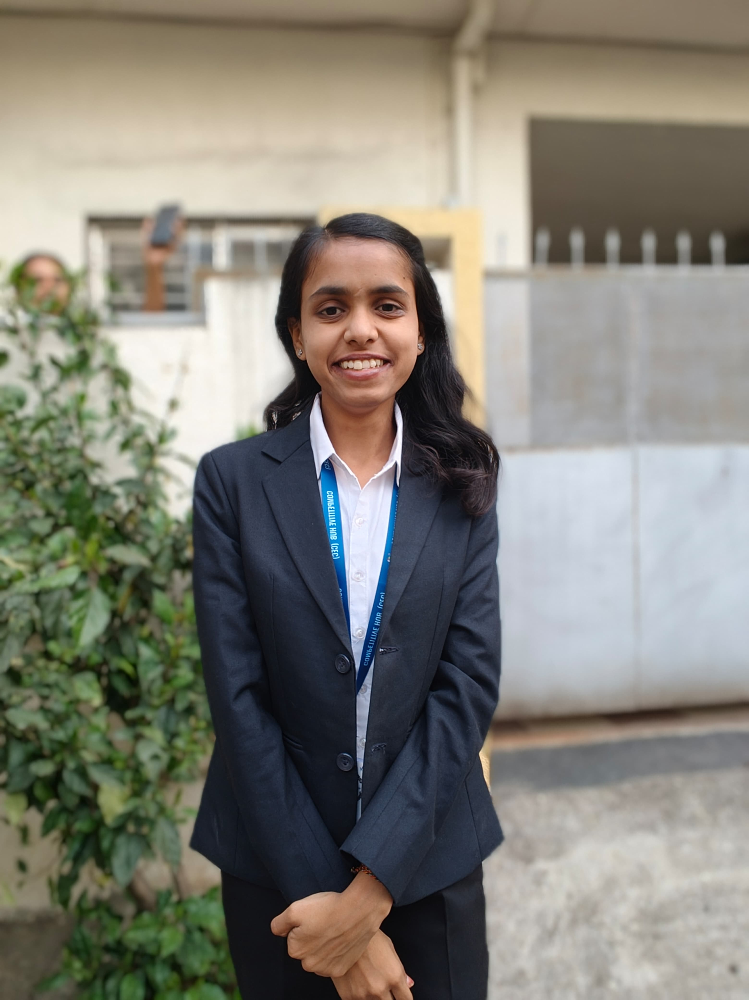

2023 — 2027
Vishwakarma Institute of Information Technology (VIIT)
CurrentB.Tech in Artificial Intelligence and Data Science
CGPA: 8.95AI & DATA SCIENCE UNDERGRADUATE
I’m an Artificial Intelligence and Data Science student interested in machine learning, data analytics, and building technology that solves real-world problems.

01 / ABOUT ME
I'm an Artificial Intelligence and Data Science undergraduate at Vishwakarma Institute of Information Technology. I have a foundation in Python, SQL, data analytics, and machine learning, with hands-on experience developing a deepfake detection application and interactive Power BI dashboards.
I enjoy exploring data, learning new technologies, and collaborating with teams to turn challenging ideas into practical solutions.
02 / EDUCATION
B.Tech in Artificial Intelligence and Data Science
CGPA: 8.95Higher Secondary Certificate (HSC)
MHT-CET: 95 percentileSecondary School Certificate (SSC)
03 / SELECTED WORK
Developed a web application for image- and video-based deepfake detection using HTML, CSS, OpenCV, and deep learning techniques. Implemented face detection and video-frame processing, with confidence-based prediction results.
Created an interactive Power BI dashboard to explore traffic patterns, travel trends, destination preferences, trip counts, travel hours, and average travel distance.
Implemented image loading, display, resizing, grayscale conversion, and edge detection while practising fundamental computer vision and image preprocessing operations.
04 / TOOLKIT
Python · SQL · C++
Data Cleaning · EDA · Data Processing · Data Visualization · Business Analytics
Supervised Learning · Classification · Random Forest · Decision Trees · KNN · SVM · Feature Engineering · Model Evaluation
Prompt Engineering · NLP Fundamentals · Basic Agentic AI Concepts
NumPy · Pandas · OpenCV · Power BI · Git · GitHub · VS Code · Google Colab
Manual Testing · Functional Testing · Test Case Design · Bug Reporting · SDLC · STLC
05 / MILESTONES
2024 · SMART INDIA HACKATHON
Nominated for the national level.
2024 · VIZ-THON
Created Power BI dashboards focused on public amenities data analysis and presentation.
06 / BEYOND THE CLASSROOM
VIIT · STUDENT LEADERSHIP
Organized motivational talks by officers, team-building activities, and debate competitions to encourage student participation and awareness of competitive examinations. Also participated in college-level football competitions, demonstrating teamwork, discipline, and sportsmanship.
07 / LET'S CONNECT
I'm open to learning, collaboration, and opportunities in AI, data science, and analytics.